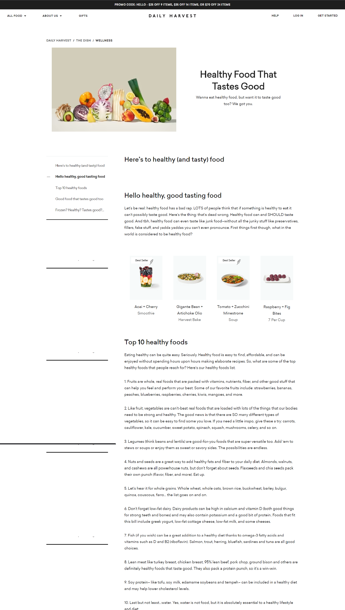
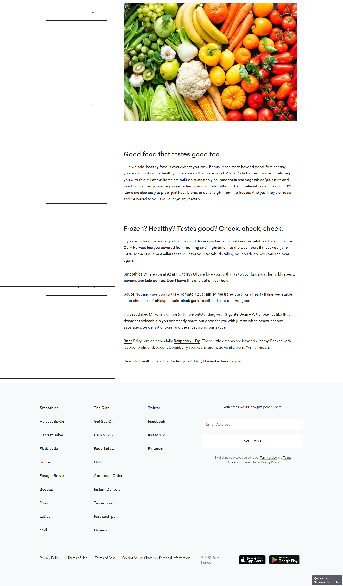
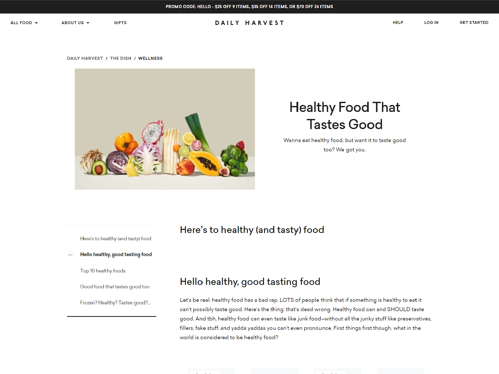
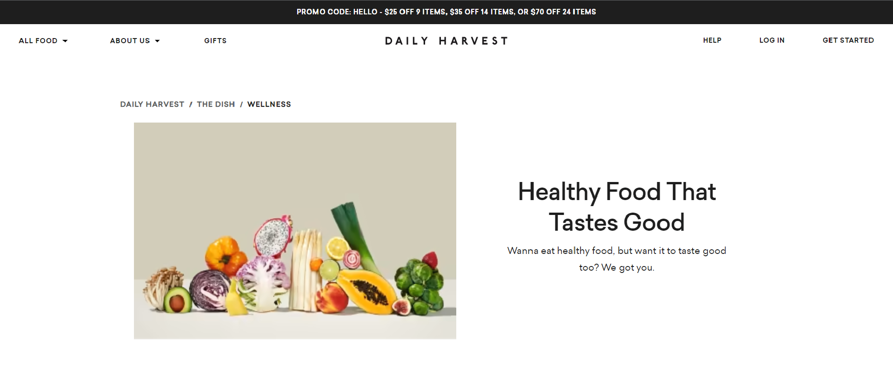

SHRUBS / THE RESEARCH / BLOG
Read our blog
OUR BLOG PAGE
Shrubs is a bonsai plant website that offers a wide selection of high-quality
bonsai trees and accessories. With a focus on customer satisfaction, Shrubs is
dedicated to providing a user-friendly shopping experience for bonsai enthusiasts of all levels.
The website features a comprehensive collection of bonsai trees, including popular species like
juniper, ficus, and bougainvillea, as well as rare and exotic varieties. Customers can choose
from a range of sizes and styles, including tabletop bonsai, small bonsai trees, and large outdoor
bonsai trees.
The webpage "blog" consists of five sections-Technology in Business, Bonsai with Technology, Positive Impacts of Technology in Business,
Negative Impacts of Technology in Business, and a navigation bar. The code starts with the declaration of the document type "DOCTYPE html",
which specifies the version of HTML used. Then, it opens the HTML document with the html tag and includes a head section that specifies meta
information and links to a CSS stylesheet. The body section contains the main content of the website. The navigation bar, located at the top
of the page, is created using a div tag with a class of "nav bar" and contains a header with the website's title "Technology and Bonsai".
The main content of the page is divided into five sections, each identified by an id (technology, bonsai, positive, negative) and created using a section tag. The section titles are defined using h1 tags, and the content inside each section is defined using p tags.
The navigation links in the header section are created using a tags and are set to jump to the corresponding section of the page when clicked.
The styles for the website are defined in a separate CSS file linked in the head section using the link tag.

DAILY HARVEST
The Daily Harvest blog page is arranged with a clean and visually appealing layout. The page is
divided into different sections to make it easy for visitors to navigate and find the information
they are looking for. The header of the page features the logo of the company, a search bar, and
a navigation menu that leads to other pages on the website. The blog page also features a featured
post section, where the most recent or popular post is highlighted. The main content section of the
page is where the blog posts are displayed.
The posts are accompanied by a feature image and a brief
description to give visitors a preview of what the post is about. The posts are organized by categories,
such as food, wellness, and lifestyle, so that visitors can easily find posts that are relevant to their
interests.The footer of the page typically includes information about the company, such as their mission,
contact information, and links to their social media profiles. The footer also includes links to other
pages on the website, such as the product pages and the about us page.
The posts are accompanied by a feature image and a brief
description to give visitors a preview of what the post is about. The posts are organized by categories,
such as food, wellness, and lifestyle, so that visitors can easily find posts that are relevant to their
interests.The footer of the page typically includes information about the company, such as their mission,
contact information, and links to their social media profiles. The footer also includes links to other
pages on the website, such as the product pages and the about us page. The webpage is a resource for visitors
to learn about healthy eating, wellness, and lifestyle topics. The page is designed to be easy to navigate and
provides a wealth of information to help visitors improve their overall health and well-being.


SIMILARITIES BETWEEN THE PAGES
1. The reference page and the blog page both use HTML, CSS, and JavaScript to create and style their webpages
Gohyer:
Shrubs:
2. Both pages have a header section at the top, which is usually the first thing a user sees when they visit the
website. The header section usually contains the logo and the main navigation menu.
Gohyer:
Shrubs:

3. Both pages also use CSS for styling, including for defining the layout, font styles, and colors used on the page.
Gohyer:
Shrubs:
DIFFERENCES BETWEEN THE PAGES
1. The reference blog page contains various links that lead to different pages in different categories whereas
the blog page only consists of a singular page.
Daily Harvest:
Shrubs:
2. The blog page does not contain complex styling elements in order to portrays a minimalistic approach. The reference page on the other hand
contains sophisticated designs with additional elements.
Daily Harvest:
Shrubs:
3. The blog page only static text, while the Daily Harvest blog page has dynamic content that changes based on user interactions, updates to the website, or other factors.